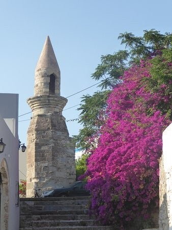

Eski Tzami moskee
De oudste moskee van Kos-stad – van het gebouw zelf is alleen de minaret over, op Diagoras-plein.
Gratis
Kos-stad
± 1586
Oudste moskee van Kos-stad
Eski Tzami betekent “oude moskee”. Het is een van de oudste Ottomaanse sporen op het eiland – waarschijnlijk gebouwd in 1586 en de oudste moskee in Kos-stad.
± 1586
gebouwd
± 11 m
minaret over
Alleen de minaret
Van de moskee zelf is niets meer over, behalve de minaret van iets meer dan elf meter. Die staat op Diagoras-plein.
De moskee is verwoest tijdens de aardbeving van 1933. De restanten werden gesloopt; alleen een deel van de minaret bleef staan.
De minaret op Diagoras-plein
Minaret

OmgevingBezoeken
Gratis, altijd van buitenaf te zien op Diagoras-plein. Er is geen interieur meer te bezoeken.
Tip: de minaret is makkelijk te missen tussen de gebouwen – kijk omhoog op Diagoras-plein. Leuk om even stil bij stil te staan: dit is het oudste Ottomaanse restant in de stad.